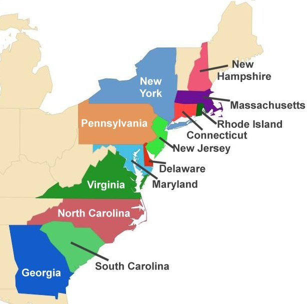

Home
About
Background
US Constitution
British Governing Documents
Governing Systems
Conclusion
Citations
The thirteen colonies in the New World declared independence from Britain on July 4th, 1776. The reasoning behind the independence was quite simple, the colonist were being unfairly treated by the British government in a few key ways. According to Alan Axelrod in Complete Idiot's Guide to American History, “The British Parliament did not have representation for the colonies, but still imposed taxes and laws on them without their consent. The British had just ended the French and Indian wars and were in severe debt. To pay off these debts the King imposed taxes on the colonist without representation in parliament. Some of these taxations were the taxation of tea, stamps, and sugar products.”(Axelrod 1998, p. 64). As a rebellion to these taxes some colonist dressed up as Indians and dumped barrels of tea in the Boston Harbour, this became known as the Boston Tea Party. Some laws that were imposed on the colonist were the currency act which forbid the colonies from issuing paper money, the quartering act which required colonist to provide housing, food, and drinks for British soldiers, and the Intolerable Acts which closed off the port of Boston until the tea that was dumped into the harbour was repaid. Another law that was established by the King of England was the Proclamation of 1763 which prohibited settlements beyond the Appalachian Mountains. Colonists who had already settled on these lands were ordered to return east of the mountains. As a result of these improper taxation and laws the colonist preceeded to do something that would change the history of the world. They declared independence on July 4th, 1776 and created the constitution of the United States of America on september 17, 1787.
